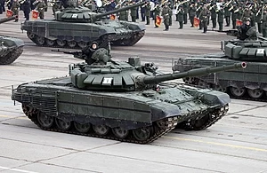
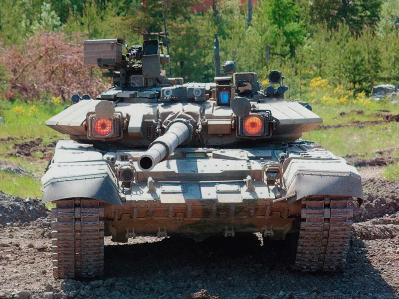

Tenkovi za vreme hladnog rata su SSSR su se u velikom broju proizvodili ,razvijali i gledani da budu sposobni u svakom mogućem pravcu dal :razvijenosti,jačini,brzini itd..
Stoga ovde smo pokušali da obuhvatimo ove kategorije za tenkove (T-72,T-80,T-90)
- Razvoj
- Trup,Top
- Oklop
- Izvoz
T-72
T-80
T-90

- T-72

- Razvoj
- T-72 je sovjetski osnovni borbeni tenk koji je ušao u serijsku proizvodnju 1973.Pokazao se kao izdržljiv tenk sa velikom razornom moći, zbog čega je postao uz T-55 najrasprostranjeniji tenk koji je razvijen i proizveden u Sovjetskom Savezu.Tokom šezdesetih godina dvadesetog veka, u Sovjetskom Savezu je razvijano više tenkova. Najdalje se otišlo sa razvojem na T-64, na kojem je radio Morozovski projektantski biro. On je proizveden u maloj probnoj seriji 1963. godine. Ovaj tenk je doneo mnoga unapređenja u odnosu na porodicu tenkova T-54/55 i to u vidu novog laminiranog oklopa, kao i automatskog punjača glavnog topa, što je svelo posadu na tri člana. Međutim, ta konstrukcija je sa sobom donela i više tehničkih problema, među kojima je najveći bio nepouzdani dizel-motor, kao i menjač koji je stvarao dosta mehaničkih problema.
- Trup
- Trup T-72 je projektovan na isti način kao kod svih Sovjetskih tenkova. Vozač se nalazi na sredini prednjeg dela tenka, dok se komandant nalazi na desnoj strani, a nišandžija na levoj. Motor se nalazi u zadnjem delu tenka. Blagi nagib prednjeg dela oklopa je dobro postavljen i završava se dubokim rebrastim štitnikom od vode i blata u obliku latiničnog slova "V“. Ispod nosa tenka se nalazi buldožerska kašika, koja se može iskoristiti za ukopavanje tenka. Kao i ostali Sovjetski tenkovi, i T-72 ima mogućnost korišćenja opreme za postavljanje mina.Vozač ima jedan otvor koji se nalazi sa njegove desne strane, gde se nalazi i štitnik. Gorivo se skladišti uz gornji desni deo trupa, a sa leve strane se nalaze skladišne kutije. U zadnjem delu tenka sa nalazi greda koja služi za otkopavanje tenka, kao i dva kanistera sa gorivom, koja se mogu odbaciti. Vešanje se sastoji od šest točkova.
- Top
- T-72 koristi glatkocevni top 2A46M, kalibra 125 mm. Maksimalan kapacitet granata koje se nalaze u tenku je 39. Mogu se koristiti kumulativne protivtoklopne granate, visoko eksplozivne rasprskavajuće granate ili kinetička protivoklopna zrna. Kao i kod većine novijih Sovjetskih i Ruskih tenkova, iz cevi se može ispaljivati navođena protivtenkovska raketa. Prva verzija kod koje je uvedena mogućnost korišćenja protivoklopne rakete 9M119 Svir je bio model T-80B.Sve do kraja osamdesetih godina, top na T-72 nije mogao da koristi protivtenkovske rakete kao municiju. To je bila ekskluzivna opcija koju su do tad posedovali T-64B i T-80, i to je bio jedan od načina za održavanje niske cene T-72.Kao i kod T-64 i T-80, tako i glavni top T-72 koristi automatski punjač. Međutim, nisu svi punjači isti. Konkretno, na T-72 se koristi mehanički, umesto hidrauličnog autopunjača koji se koristi na T-64 i T-80.Još jedan razlog zašto T-72 nije nasledio autopunjač sa T-64, kao što je to slučaj sa T-80, je što je trup tenka uži u odnosu na ove modele. Automatski punjač topa omogućava brzinu paljbe od osam granata u minutu
- Oklop
- Istraživački centar u Kubinki je radio na razvoju reaktivnog oklopa uporedo sa razvitkom modela T-72. Ruski reaktivni oklop je nazvan EDZ, i razlikovao se u više segmenata od Izraelskog oklopa Blejzer. EDZ je predstavljao dodatak oklopu sastavljen eksplozivnih punjenja. Kada kumulativna protivtenkovska granata pogodi EZD, ona ga probija i time izaziva eksploziju samog EZD-a. Tom eksplozijom se pokreću dve metalne ploče koje su deo EZD-a. Jedna, koju direktno pogađa granata, se kreće u smeru nadolazećeg projektila, i nanosi mi fizička oštećenja. Druga ploča, koja se nalazi bliže oklopu tenka, se potiskuje prema oklopu i zatim se od njega odbija u pravcu samog projektila. Na ovaj način EDZ pruža veliku zaštitu od visokoeksplozivnih antitenkovskih granata i projektila.Ova vrsta oklopa je prvi put primećena na ovim tenkovima u Nemačkoj 1984. godine, što je predstavljalo neprijatno iznenađenje za NATO, koji je dosta ulagao u razvoj protivtenkovskih raketa.Oklop EDZ je počeo da se ugrađuje na T-72A tokom 1987, a zatim i na T-72B i T-72B1. Standardan paket oklopa EDZ se sastojao od 151 eksplozivnog punjenja. Modeli T-72 opremljeni ovom vrstom oklopa nisu imali promenu u nazivu, kao što je bio slučaj kod modela T-64 i T-80 kojima je dodavano slovo V. Krajem osamdesetih godina se radilo na unapređivanju reaktivnog oklopa. Cilj je bio da se umanji šteta koju je eksploziv iz oklopa nanosio samom tenku. Uz razvoj novog reaktivnog oklopa, napravljen je i sistem koji optičkim i elektronskim sredstvima ometa navođene rakete, koji je nazvan Štora 1.
Rezime-T-72 je od početka proizvodnje predstavljao tenk koji će zameniti zastarele T-55 i T-62 u armijama Varšavskog pakta i drugih korisnika Sovjetskog oružjaU Iraku je sklapana slabija verzija T-72 nazvana Vavilonski lav.Proizvodili su 2A46M top, koji je posle dvadeset ispaljenih granata pokazivao probleme prilikom ispaljivanja. Tokom Zalivskog rata masovno je korišten u borbama protiv M1 Abramsa i Čalendžera 1. Britanski i Američki tenkovi su pokazali ogromnu nadmoćnost u odnosu na Iračke T-72.
Vrh stranice
- T-80

- Razvoj
- T-80 je ruski borbeni tenk koji se proizvodi od 1976. godine. Razvijen je na temelju tenka T-64 bio je prvi tenk na svijetu opremljen plinskom turbinom. Različite inačice tenka T-80 koriste Bjelorusija, Cipar, Kazahstan, Pakistan, Rusija, Južna Koreja i Ukrajina. Tenkovi T-80U i T-80UM proizvode se u tvornici Omsk u Rusiji. Glavni dizajner tenka T-80 bio je ruski inženjer Nikolay Popov.Projekt izgradnje prvog tenka s plinskom turbinom u Rusiji kreće 1949. godine. Godine 1955. izgrađena su dva prototipa motora s turbinom snage 1000KS (746 kW). T-80 je izgledom sličan tenku T-72, ali su ta dva tenka mehanički vrlo različiti. Razvijen je na temelju tenka T-64 i trebao je biti ruski odgovor na američki M1 Abrams i njemački Leopard 2. Najveći nedostatak prvih inačica tenkova T-80 (T-80, T-80A i T-80B) bila je velika potrošnja i slabija oklopna zaštita u odnosu na zapadne tenkove. Modeli T-80BV, T-80U, T-80UM i T-80UD su svojevremeno nadmašivali zapadne tenkove (M1A1 Abrams, Merkava Mk2, Leopard 2A3...) po pitanju oklopne zaštite, ali su još uvijek imali preveliku potrošnju goriva.
T-80U je poboljšani borbeni tenk T-80, gdje U u nazivu znači usavršen. U službu je uveden 1985. godine i tada je bio najbolji tenk na svijetu objedinjavajući odličnu oklopnu zaštitu s novorazvijenim reaktivnim oklopom Kontakt-5, izvrsnu pokretljivost, veliku preciznost gađanja potpomognutu sustavom kontrole paljbe 1A42 i balističkim računalom 1V517, noćnom optikom i prvom generacijom infracrvene kamere. Pokreće ga GTD-1250 plinska turbina snage 1250KS (919 kW). Ovaj motor može koristiti mlazna goriva, dizel i nisko oktanski benzin.
- Trup
- Sredinom šezdesetih godina Sovjetski konstruktori su razvili verziju tenka T-64 sa gasnom turbinom GTD-3TL snage 257 kW. Ova verzija je označena T-64T i poslužila je kao osnova za razvoj tenka Objekat 219 (T-80). Razvoj tenka T-80 započet je 1969. godine u fabrici Kirov u Lenjingradu, a prvi prototip je završen 1970. godine. U novo vozilo je ugrađen veliki broj komponenti sa T-64, pa je opšta konfiguracija oklopnog tela i kupole bila slična konfiguraciji T-64. Za T-80 je razvijen potpuno novi sistem oslanjanja koji je, uz gasnu turbinu obezbedio znatno veću pokretljivost tenka T-80 u odnosu na T-64.
- Top
- Osnovno oružje T-80 je 125mm top s glatkom cevi i automatskim punjačem. Dužina cevi topa je 6,0 m, a stabiliziran je u dve ravnine i ima mogućnost paljbe iz pokreta, no ipak mora usporiti pre paljbe. Može koristi projektile s penetratorom od osiromašenog urana. Raspon streljiva koje može koristiti kreće se od protupješačkih naboja, potkalibarskih penetratora, visoko eksplozivnih protutenkovskih naboja do vođenih 125 mm raketa (AT-8 Songster). Ima solidan SUP koji se sastoji od digitalnog balističkog računala, dnevnog i noćnog vizora, laserski daljinomjer, meteorološki senzor itd.
- Oklop
- Oklopna zaštita T-80 sastoji se od višeslojnog i reaktivnog oklopa. Oklop prvih inačica je pretpostavlja se sličan onom na tenku Merkava Mk 2. Kasnije inačice su imale znatno poboljšan oklop. Kao dodatnu zaštitu ima i sustav aktivne obrane koji uključuje dva odašiljača infracrvenih signala s modulatorom za ometanje protivničkog sustava vođenja rakete. Također posjeduje mogućnost stvaranja dimne zavjese iz 4 posebna izlaza na kupoli i ispaljivanja mamaca za zbunjivanje neprijateljskih projektila.
T-80BV je unapređeni T-80B s reaktivnim oklopom Kontakt-1 koji gotovo udvostručuje razinu zaštite protiv kumulativnih projektila. Međutim, reaktivni oklop pokriva samo određene dijelove tenka ostavljajući preostala područja zaštićena samo osnovnim oklopom.
Tenk T-80U je u vreme uvođenja u službu 1985. godine bio jedan od najsuvremenijih i najbolje zaštičenih tenkova na svijetu, nadmašujući zaštitu i borbene sposobnosti zapadnih tenkova poput M1A1 Abramsa, Leoparda 2A4, Challengera 1 i ostalih. Za razliku od T-80BV koji je bio opremljen reaktivnim oklopom Kontakt-1, T-80U s novim reaktivnim oklopom Kontakt-5 pruža znatno bolju zaštitu od kumulativnih i pancirnih potkalibriranih projektila. Upravo zato su amerikanci i englezi bili zainteresirani za ovaj tenk kojeg su potajno otkupili od Ukrajine u prvoj polovici 1990-tih. Testiranja su pokazala izrazitu otpornost i nemogućnost proboja prednje strane kupole i prednjeg dijela trupa "srebrnim metkom" M-829 A1, koji je u Zaljevskom ratu bez problema probijao iračke verzije sovjetskih tenkova T-72 ponzatih kao "babilonski lav" te starije sovjetske tenkove T-62 i T-55.
Rezime-T-80 je bio glavni borbeni tenk SSSR-a koji su raspadom Sovjetskog Saveza nasleedile novonastale države, uglavnom Rusija, Ukrajina i Bjelorusija. Prva zemlja koja je kupila T-80 bio je Kipar koji ih je nabavljao u dva navrata. Nabava tih tenkova dovela je Kiparsku Nacionalnu gardu na rub sukoba s turskom vojskom koja kontroliše severni deo.Ujedno bitna stvar za reći jeste da je ovaj tenk najbolji tenk u svetu zbog odbrane i napada ujedno i bolji od zapadnih tenkova.
Vrh stranice
- T-90

- Razvoj
- T-90 je glavni borbeni tenk ruske vojske. Napravljen je spojem najboljih karakteristika tenka T-72 i T-80. Po svojim karakteristikama T-90 spada u najmodernije tenkove u svijetu, ali ima i nekoliko bitnih mana kao što je koncept smještaja streljiva ispod kupole koji je izuzetno opasan (što se pokazalo u Čečeniji i u ratovima na prostoru bivše SFRJ). Prednosti T-90 u odnosu na zapadne tenkove su mogućnost lansiranja protuoklopnih vođenih raketa iz topa, niska silueta, mala masa, odlična pokretljivost i prohodnost, učinkovit reaktivni oklop, posjedovanje samozaštitnog sustava Štora, napredni sustav upravljanja paljbom (noviji modeli) i niža cijena.Krajem osamdesetih godina konstruktori tenkova u Njižnjem Tagilu počeli su rad na projektu modernizirane inačice tenka T-72B, s ciljem da se vatrena moć, pokretljivost i oklopna zaštita dovedu na razinu sličnu tenku T-80U (koji je razvijen u konkurentskom birou u Sankt-Peterburgu). Tijekom razvoja vozilo je bilo označeno Objekt 188. Tenk je prošao državna ispitivanja 1989. godine, a manja serijska proizvodnja je počela u studenom 1993. u tvornici "Uralvagonzavod". Ruska vojska je tenk prvobitno označila T-72BU, ali je zatim oznaka promijenjena u T-90.
- Trup
- T-90A/S inačice imaju poboljšan oklop u odnosu na prvotnu inačicu te je za njih karakteristična varena "sendvič" kupola, a T-90AM/MS i T-90M inačice imaju modificirani oklop s puno boljim razmještajem novog reaktivnog oklopa Relikt koji je ovaj put znatno bolje povezan u cjelinu i pokriva puno veća područja osnovnog oklopa. Prema procjenama nekih stručnjaka, T-90AM ima trenutno najbolju oklopnu zaštitu koja nadmašuje zapadna rješenja poput M1A2 SEPv3 Abramsa i Leoparda 2A7V.T-90 je prvotna, osnovna inačica tenka, koja je nastala potkraj 1980-tih. Drugim riječima, to je bitno nadograđeni i modernizirani T-72B koji je još poznat pod nazivom T-72BU. Ova inačica tenka se ne proizvodi od kraja 1990-tih. Za razliku od novijih inačica, prvotni T-90 je imao lijevanu kupolu i V-84MS motor s 840 KS. Masa tenka je 46,5 tona.Unaprijeđena inačica poznatija kao "T-90 Vladimir" po dizajneru Vladimiru Ivanoviču Potkinu. Tenk je nastao krajem 1990-tih, a u službu je uveden 2004. godine. Karakterizira ga varena kupola poboljšane zaštite s dodatno zaštićenim područjem streljiva, napredniji optičko-elektronički sustavi te jači motor V-92S2 koji razvija 1000 KS.U osnovnoj inačici tenk pokreće 12-cilindričnim višegorivi motor V-84MS s maksimalnom snagom 618 KW (840 KS) i okretnim momentom od 3335 Nm, što je nedovoljno za tenk mase 46,5 t. Zato je proizvođač kasnije ponudio i mogućnost ugradnje jačeg motora V-92S2 sa snagom od 736 KW (1000 KS) i okretnim momentom od 4046 Nm koji je prisutan u T-90A, T-90S i T-90M inačicama. Snaga se prenosi preko mehaničke transmisije, identične kao kod tenka T-72B. Mjenjač ima sedam stupnjeva prijenosa za kretanje naprijed i jedan za nazad. Najjača inačica motora je V-92S2F koja razvija 831 KW (1130 KS) i 4521 Nm okretnog momenta i koja se ugrađuje u T-90AM i T-90MS inačice. T-90AM i njegova izvozna inačica imaju automatske mjenjače sa sedam stupnjeva prijenosa unaprijed i jednim unazad. Primijenjen je sustav oslanjanja s torzijskim štapovima, a na prvoj, drugoj i šestoj oslonskoj točki ugrađeni su hidraulični amortizeri.
- Top
- Osnovno naoružanje je top 125 mm 2A46M-2 glatke cijevi. Top je u potpunosti stabiliziran u dvije ravnine, a dužina cijevi je 6,0 m. Zadržan je sustav automatskog punjenja s 42 dvodijelne granate smještene u obrtnom transporteru ispod kupole. Koristi se svim standardnim ruskim streljivom kalibra 125 mm, uključujući i protuoklopne vođene rakete 9M119M (AT-11 Sniper), ali i posebno razvijena potkalibarna-razorna granata (pogodna za gađanje žive sile u zaklonu i niskoletećih helikoptera također naravno i tenkove). Sposoban je gađati ciljeve iz pokreta. Kao i kod prethodnih sovjetskih tenkova, glavni top ima znatan nedostatak u vidu mogućnosti nagiba odnosno elevacije koja se kreće od -5° do +14° (primjera radi njemački Rheinmetall Rh-120 top na Leopardu 2 i M1 Abramsu ima mogućnost elevacije od -9° do +20°). Najveći dopušteni tlak u komori topa je 6500 bara što je veliko poboljšanje u odnosu na prethodne 125 mm topove na tenkovima T-64 i T-72 s najvećim dopuštenim tlakom od 5100 bara, no još uvijek manje od novih zapadnih 120 mm tenkovskih topova koji imaju oko 10 % veći dopušteni tlak (preko 7000 bara).
- Oklop
- Oklop tijela tenka izrađen je varenjem ploča pancirnog čelika, a s prednje strane je primijenjen višeslojni oklop. Testiranja krajem 90' tih u Rusiji pokazala su otpornost prednjeg oklopa na sva dotadašnja 125 mm tenkovska zrna kao i mnoge protutenkovske rakete. Na prednju gornju kosu ploču i na bočne štitnike gusjenica ("suknje") postavljeni su elementi eksplozivnog reaktivnog oklopa Kontakt-5. Kod prvotne inačice kupola je izrađena od lijevanog čelika, s dodatkom sloja od kompozitnog materijala u prednjem dijelu od 35 stupnjeva. Elementi reaktivnog oklopa Kontakt-5 postavljeni su i na kupolu. Time je oklopna zaštita tenka T-90 malo poboljšana u odnosu na zaštitu T-80U, koja je 1985. kad je T-80U predstavljen, bila jedna od najboljih na svijetu. No ipak, jer je zaštita tenkova kao i protutenkovskog streljiva nevjerojatno napredovala u zadnjih 20 godina, ta razina zaštite je ipak nedostatna ako se uspoređuje s, primjerice, zaštitom Leopard 2A6 tenka. Problem kod T-90, T-90A i T-90S inačica je jako loš razmještaj reaktivnog oklopa koji ostavlja određena područja kupole i trupa bez dodatne zaštite. Drugim riječima, reaktivni oklop nije kompaktno povezan u cjelinu bez "rupa" i bez izloženih dijelova osnovnog oklopa, što je dizajnerski i sigurnosni propust. Na kupolu tenka T-90 postavljen je sustav aktivne zaštite TŠU-1-7 "Štora-1". Sustav se sastoji od detektora laserskog zračenja, bacača dimnih kutija i dvije IC lampe koje šalju signale za ometanje protuoklopnih vođenih raketa. Međutim, sustav Štora je maknut s T-90AM/MS i T-90M zbog neučinkovitosti protiv modernih protuoklopnih raketa, a na njezino mjesto je stavljen eksplozivni reaktivni oklop kako bi se poboljšala zaštita tog dijela kupole.
T-90 se koristio u Dagestanskom ratu, sirijskom građanskom ratu, ratu u donbasu 2020. godine, sukobima između Kine i Indije i u sukobu oko Nagorno-Karabaha 2020. godine.Rana izvozna varijanta t-90S navodno je vidjela akciju tijekom invazije Čečena na Dagestan 199. godine. Jedno vozilo je pogođeno 7 puta RPG protutenkovskim raketom ali je ostalo u akciji.Flag of Algeria.svg Alžir: zemlja je u dvije narudžbe naručila ukupno 305 tenkova. Prva narudžba od 185 tenkova je ugovorena tijekom 2009Flag of India.svg Indija: indijska vojska trenutno koristi 2078 T-90 tenkova koji su naručeni na temelju tri različite narudžbe iz Rusije i domaće proizvodnje. Prve dvije narudžbe iz Rusije su iznosile 310 odnosno 300 tenkova (2000. i 2006.)Turkmenistan: tijekom 2010. je naručeno deset T-90S tenkova ukupno vrijednih 30 milijuna USD dok je 2011.